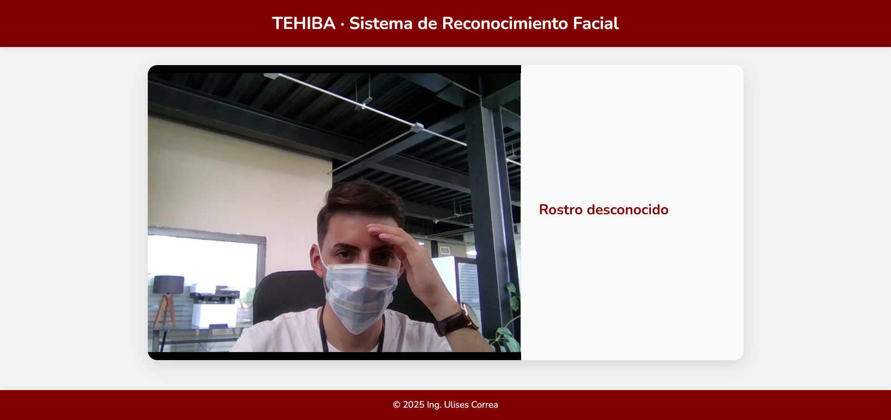
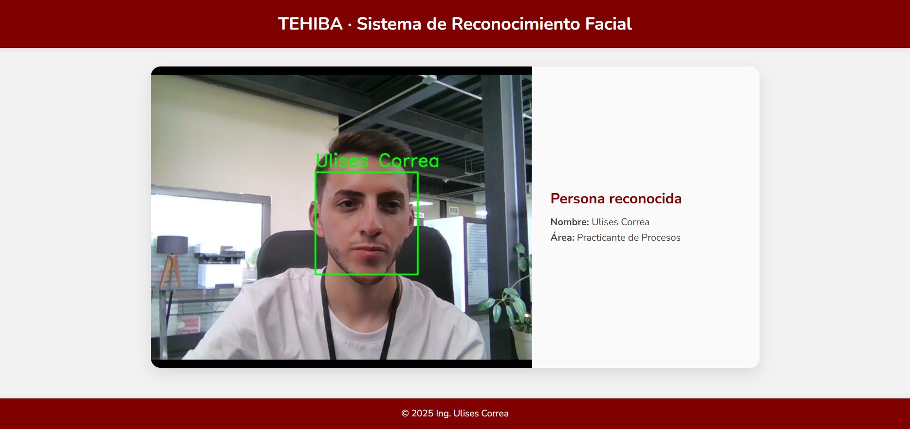

Project Overview
Tech Stack: Python, Flask, OpenCV, JavaScript (AJAX)
This system was developed using Flask and OpenCV to perform real-time facial recognition through a webcam. It detects and identifies individuals by comparing live input with previously stored images, displaying relevant information through a responsive web interface.
Key Features
- Real-Time Detection: Captures webcam input and detects faces instantly.
- Facial Recognition: Matches detected faces against known images stored in the
known/directory. - Web Interface: Displays live video with bounding boxes and a dynamic panel showing user information.
- Dynamic Updates: Uses AJAX for real-time communication with the Flask backend, updating recognized user data instantly.
- Scalability: Easily extendable by adding new images to the dataset.
This project demonstrates the integration of computer vision and web technologies, making it suitable for applications such as access control, security systems, and automated identification solutions.
Gallery

